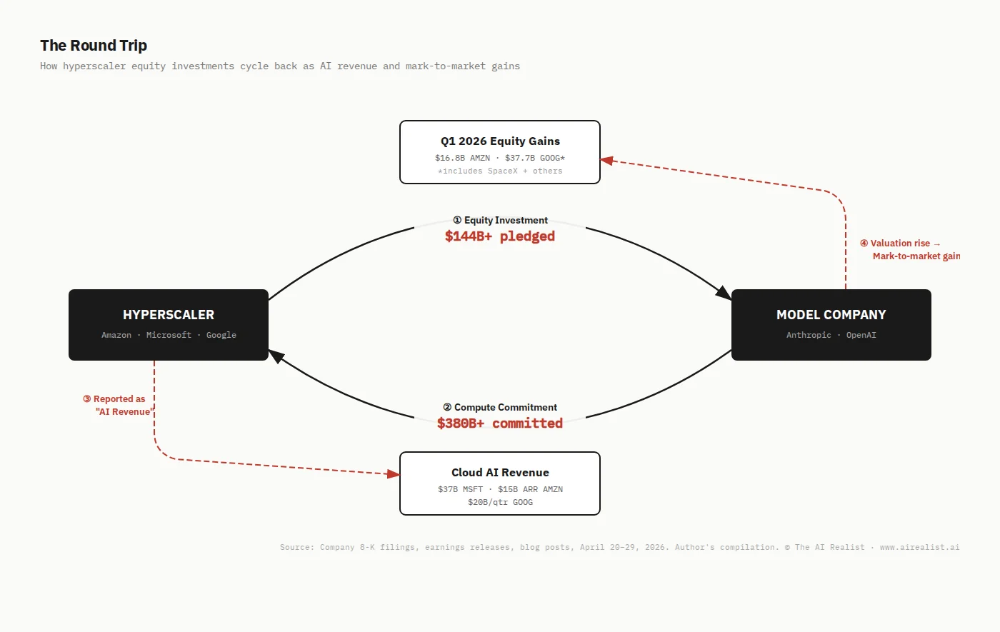
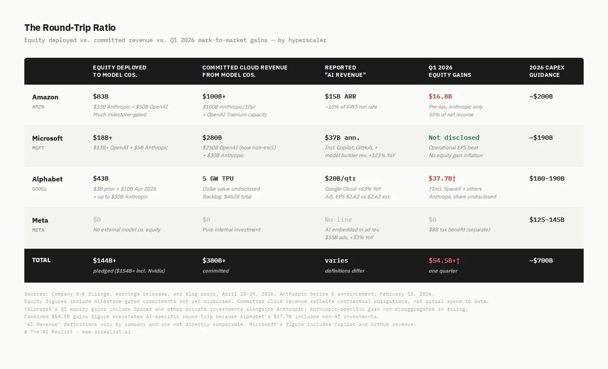

Three days in April told the story the earnings calls didn’t.
On Sunday, April 27, Microsoft and OpenAI announced they were ending their exclusivity arrangement. The partnership that defined the first era of commercial AI — Microsoft’s billions in exchange for sole access to OpenAI’s models — was restructured into a looser arrangement: a non-exclusive license through 2032, OpenAI free to serve any cloud, Microsoft no longer paying OpenAI a revenue share. The word “exclusive” became “non-exclusive.” [1]
On Monday, OpenAI’s models went live on Amazon Web Services. Bedrock customers could now access GPT and Codex alongside Anthropic’s Claude, which had been on Bedrock since 2023. Andy Jassy posted on X to celebrate. [2]
On Tuesday evening, all four of the world’s largest technology companies reported quarterly earnings within hours of each other. Amazon, Microsoft, Alphabet, and Meta collectively guided capital expenditures to approximately $700 billion in 2026 — the largest single-year infrastructure commitment in the history of corporate America. [3] Each reported what it called AI revenue. No two defined the term the same way.
The market moved. Microsoft surged after reporting capital expenditure of $3.4 billion below expectations. Meta dropped 6% after raising its capex guidance by $10 billion. [4] Alphabet climbed on Google Cloud’s 63% revenue growth. Amazon beat on every line. [5] The consensus held: AI spending is working.
What the consensus missed is that the spending and the revenue are partly the same money.
The Numbers Everyone Saw
The headline figures are genuinely impressive. AWS grew 28%, Google Cloud crossed $20 billion at 63% growth, Azure hit 40% in constant currency, and Meta’s ad revenue surged 33%. [6][7][8][9] The cloud businesses are performing. The question is what else the earnings showed.
Amazon’s net income surged 77% to $30.3 billion. Buried in the 8-K: $16.8 billion of that came from pre-tax gains on its investment in Anthropic, booked as non-operating income. [10] Strip the Anthropic gain, and Amazon’s net income growth was respectable but unremarkable.
Alphabet’s net income rose 81% to $62.6 billion. The filing disclosed $37.7 billion in gains from nonmarketable equity securities — a category that includes Alphabet’s stakes in both Anthropic (estimated at 14%) and SpaceX (estimated at 6%). [11] The gains alone exceeded Google Cloud’s entire quarterly revenue.
Meta’s earnings included an $8 billion one-time tax benefit from the One Big Beautiful Bill Act — a different kind of inflation, clearly labeled and widely noted. [12]
Of the four companies, only Microsoft reported earnings growth driven primarily by operations rather than investment gains or tax adjustments. Its $4.27 EPS, up 21%, reflected actual growth in cloud and software revenue. [13] This matters for what follows.
The question nobody on the earnings calls asked: how much of the AI revenue driving cloud business growth comes from the same companies whose rising valuations are boosting net income?

The Capital Loop
The financing architecture of frontier AI has converged on a single structure. Call it the round-trip.
Step one: the hyperscaler invests equity in the model company.Amazon has committed up to $33 billion in Anthropic — $8 billion in prior rounds, $5 billion in April 2026, and up to $20 billion more tied to commercial milestones. It also committed $50 billion to OpenAI in February, with $15 billion disbursed initially. [14] Alphabet committed up to $40 billion in Anthropic — $3 billion in prior rounds, $10 billion in April 2026, and up to $30 billion contingent on performance. [15] Microsoft invested $5 billion in Anthropic in November 2025, alongside Nvidia’s $10 billion. [16] Microsoft’s prior investment in OpenAI exceeds $13 billion. [17]
Step two: the model company commits to spend multiples of the investment on the hyperscaler’s infrastructure.Anthropic committed more than $100 billion to AWS over ten years, securing up to 5 gigawatts of Trainium capacity. [18] It committed $30 billion to Microsoft Azure. [19] It signed a deal with Google and Broadcom for 5 gigawatts of TPU capacity. [20] OpenAI committed $250 billion to Azure through 2032 — though that commitment is now non-exclusive. [21] OpenAI committed 2 gigawatts of Trainium capacity on AWS. [22]
Add it up: Anthropic alone has committed at least $130 billion in cloud infrastructure spending to the three hyperscalers that have collectively pledged up to $88 billion in equity to Anthropic. OpenAI has committed over $250 billion to cloud providers that have invested over $63 billion in OpenAI. The committed infrastructure spending exceeds the equity investment by more than 2-to-1.
Step three: the hyperscaler reports the resulting cloud consumption as AI revenue.Amazon cites $15 billion in annualized AI revenue run rate, noting that over 100,000 customers run Claude on Bedrock. [23] Microsoft reports $37 billion in annualized AI revenue, which includes “all revenue from model builders” on Azure. [24] Google Cloud’s $20 billion in quarterly revenue includes Anthropic’s TPU consumption, and the company’s backlog of $462 billion — which nearly doubled quarter over quarter — now includes TPU hardware agreements. [25]
None of the three discloses how much of their reported AI revenue comes from companies in which they’ve invested.
Step four: the hyperscaler books mark-to-market gains on the equity investment.These are unrealized gains — the investment’s value has risen on paper, but the hyperscaler hasn’t sold. Amazon recorded $16.8 billion in pre-tax gains from Anthropic in Q1 alone — gains driven by Anthropic’s valuation rising from $183 billion (September 2025) to $380 billion (February 2026). [26] Alphabet recorded $37.7 billion in gains from nonmarketable equity securities, a category that includes both Anthropic and SpaceX. [27] Both gains are booked as income in the same quarter the hyperscaler reports growing AI revenue from those same companies.
The loop is self-reinforcing. The hyperscaler invests, which funds the model company’s growth. The model company spends on the hyperscaler’s infrastructure, which grows the cloud business. The cloud growth supports the hyperscaler’s stock price. The model company’s valuation rises — driven partly by the revenue it generates, which is partly the hyperscaler’s own infrastructure spend. The hyperscaler books the valuation gain as income.
This is not fraud. It is not accounting manipulation. Every transaction is arm’s-length, audited, and disclosed. But the market is pricing the revenue growth and the investment gains as if they are two independent signals of AI’s value. They are substantially the same signal, measured twice.
The Gains Amplifier
The revenue side of the round-trip is meaningful but bounded. Even if Anthropic’s entire $100 billion AWS commitment were disbursed evenly over 10 years, it would amount to roughly $10 billion annually — significant, but less than 7% of AWS’s current run rate. The round-trip revenue is a growing fraction of cloud revenue, not the majority.
The income statement side is a different order of magnitude.
Amazon’s $16.8 billion gain on its Anthropic investment in Q1 exceeded the company’s entire AWS operating income for the quarter. [28] Strip the gain, and Amazon’s EPS falls from $2.78 to roughly $1.55 — an adjusted figure that barely clears the $1.66 consensus. [29] The disclosure is there. The headline isn’t.
Alphabet’s $37.7 billion in equity gains — which include SpaceX and other private investments alongside Anthropic — exceeded Google Cloud’s combined quarterly revenue and operating income. [30] Alphabet’s reported EPS was $5.11 against a consensus of $2.63. Strip the equity gains: CNBC reported the adjusted EPS at $2.62 — a one-centmiss. [31] The most celebrated earnings beat of the quarter was, on an adjusted basis, not a beat at all. To be precise: not all of Alphabet’s $37.7 billion in gains came from Anthropic — SpaceX is likely the largest single contributor, and the filing doesn’t disaggregate. But the structural point holds for every dollar that did come from AI investments: a substantial portion of the gains that inflated Alphabet’s headline earnings came from private companies whose valuations the hyperscalers’ own capital helped create.
The gains amplifier compounds the revenue story. The cloud business is growing partly because major companies are spending on infrastructure. That growth justifies higher capex. Higher capex builds more infrastructure. More infrastructure attracts more model company commitments. Model company valuations rise. Analysts revise EPS estimates upward. The cycle continues until the model companies either stop growing, go public (crystallizing the gains), or diversify away from the infrastructure that supports the loop.
The OpenAI-Microsoft restructuring is evidence that the third scenario — diversification — is already underway.

The “Primary” Ratchet
The word “primary” appears in every major hyperscaler-model company agreement. It is doing extraordinary financial work.
Amazon calls itself Anthropic’s “primary cloud provider” and “primary training partner.” [32] The April 2026 announcement extended this designation through a ten-year, $100 billion commitment. But Anthropic simultaneously holds commitments from Google (5 gigawatts of TPU capacity), Microsoft ($30 billion in Azure), and Nvidia ($10 billion in an optimization partnership). Claude is available on all three major clouds. “Primary” means first among several, not sole provider.
Microsoft was OpenAI’s exclusive cloud partner. Then, in February 2026, OpenAI signed a $50 billion deal with Amazon — including exclusive rights for OpenAI’s Frontier agent tool on AWS. Microsoft publicly objected, insisting it maintained exclusive API rights. [33] Two months later, the exclusivity was gone. The April 27 restructuring made Microsoft’s license non-exclusive, permitted OpenAI to serve all products on any cloud, and eliminated Microsoft’s revenue share payments to OpenAI. [34] The word “exclusive” became “primary.” Give it two renegotiations and “primary” may become “significant.”
I examined this pattern two weeks ago in the Amazon-Anthropic context: three qualifying axes — contract language, product geography, and access scope — each narrowing with every successive deal. [35] The OpenAI-Microsoft restructuring confirms the pattern is structural, not company-specific. Model companies outgrow exclusivity. The infrastructure commitments survive in the contract, but the revenue concentration doesn’t survive in practice. The market’s reaction was telling: Microsoft’s stock rose on the restructuring. Ending the revenue share and retaining a non-exclusive license through 2032 was priced as discipline, not loss. That may be right — for Microsoft. The question is whether the same logic applies to Amazon and Google, whose round-trips are still deepening.
The financial asymmetry is sharp. The hyperscaler’s infrastructure investment — $200 billion in Amazon’s case, $190 billion for Microsoft — is sunk. Data centers and custom silicon can’t be redeployed to non-AI workloads overnight. The model company’s commitment is contractual: real, binding, but portable across providers in a multi-cloud world. The model company diversifies its supply; the hyperscaler has already poured the concrete.
The Control Case
Meta reported the same week and serves as the experiment’s control group.
Meta’s AI capex is enormous — $125 to $145 billion guided for 2026, raised from $115 to $135 billion this quarter due to higher component pricing. [36] But Meta’s structure is fundamentally different. It doesn’t invest equity in external model companies. It doesn’t receive compute commitments from AI startups. Its AI investment is entirely internal: model training, inference infrastructure, and product integration. The return shows up in one place — advertising revenue.
That return is real. Meta’s ad revenue grew 33% to $55 billion, driven by AI improvements in ad targeting, with impressions up 19% and price per ad up 12%. [37] No mark-to-market gains inflated the earnings. The $8 billion tax benefit was clearly disclosed and widely noted.
Meta’s 33% revenue growth on pure internal AI investment — no round-trip, no circular gains, no mark-to-market windfalls — is what AI spending looks like when the market can see both sides of the ledger. The market punished Meta not for bad results but for spending $135 billion without the gains amplifier that made Amazon’s and Alphabet’s earnings look transformative.
The Revenue That Can’t Be Counted
The round-trip creates a measurement problem that neither the companies nor the analysts have solved.
Microsoft’s $37 billion in annualized AI revenue includes revenue from model builders running on Azure — but also Copilot enterprise seats, GitHub Copilot, and Azure AI services that have nothing to do with the round-trip. [38] The OpenAI-specific component is undisclosed but likely a fraction of the total. Before April 27, that fraction included all of OpenAI’s API traffic. After April 27, OpenAI can run on any cloud. How much of the $37 billion is at risk of migration? Microsoft hasn’t said. Amy Hood noted on the call that Azure could have grown above 40% if the company hadn’t allocated GPU capacity to first-party products like Copilot, framing the growth as supply-constrained. [39] That narrative was credible when OpenAI was exclusive. It reads differently when OpenAI has options.
Anthropic’s $30 billion run-rate revenue is reported on a gross basis — counting total end-customer spend as revenue and booking cloud infrastructure costs as expenses. [40] OpenAI disputes this approach, arguing it inflates Anthropic’s figure by approximately $8 billion relative to a net reporting basis. [41] The dispute matters here because gross reporting means Anthropic’s revenue includes the full hyperscaler infrastructure payment as both a top-line figure and an expense. The same dollar appears in both Anthropic’s revenue and AWS’s or Google Cloud’s AI revenue. This is standard revenue recognition — not double-counting in the GAAP sense — but it means the market is valuing both sides of the same transaction. To be clear: Anthropic’s cloud spending is real compute demand, the same infrastructure purchase any enterprise makes at market rates. The circularity is not in consumption but in financing — the equity investment that funds the model company and the valuation gains that flow from that same company’s growth.
Google’s $462 billion backlog now includes TPU hardware agreements with Anthropic. [42] Alphabet expects to recognize just over 50% of that backlog as revenue within 24 months. [43] When a cloud provider’s backlog includes committed purchases from a company the cloud provider has invested $40 billion in, the backlog is partly a measure of the cloud provider’s own capital commitment cycling through the system.
The aggregate picture: three hyperscalers have collectively pledged over $140 billion in equity to two model companies — over $150 billion, including Nvidia’s $10 billion. Those model companies have committed over $380 billion in infrastructure spending back to the same hyperscalers. The hyperscalers report the resulting cloud revenue as AI growth. They book the rising valuations as income. And the market prices both signals — the revenue and the gains — as independent validation that AI is working.
Most of it is working. The cloud growth is predominantly organic: enterprise AI adoption is real, developer demand for inference is real, and the shift to AI-native workloads is structural. The hyperscalers would argue the round-trip is simply a customer acquisition cost — that anchoring the model company to their infrastructure attracts organic enterprise customers who arrive for Claude or GPT and stay for the platform. That argument has merit. The question is whether the market is pricing AI revenue at the margin of a customer acquisition funnel or at the margin of independent organic demand.
But the gains that turned good quarters into spectacular ones — $16.8 billion at Amazon, $37.7 billion at Alphabet — are the round-trip showing up in the income statement. And those gains are entirely a function of rising private valuations that the hyperscalers’ own investments helped create.
What Breaks
The round-trip is stable as long as three conditions hold:the model companies keep growing,the infrastructure commitments convert to actual spend, andthe private valuations keep rising. All three are under pressure.
The capex itself is increasingly debt-funded. Amazon’s trailing twelve-month free cash flow collapsed 95% to $1.2 billion — meaning its $200 billion in 2026 capex requires substantial debt issuance. [44] Amazon would note that its FCF was similarly compressed during the AWS buildout a decade ago, and that investment proved transformative. The difference is structural: the current investment includes $83 billion in equity deployed to companies whose revenue partly cycles back through Amazon’s own infrastructure — a financing loop the AWS buildout did not have. And much of the equity “deployed” to model companies remains on paper: of Amazon’s $33 billion in commitments to Anthropic, roughly $13 billion has been disbursed; the remaining $20 billion is tied to commercial milestones that may or may not be met. The round-trip depends on commitments converting to cash. The commitments are real. The cash is conditional.
Anthropic’s growth is extraordinary — $1 billion in annualized revenue at the end of 2024, $30 billion by April 2026. [45] But OpenAI’s CFO has reportedly said the company cannot afford its promised infrastructure spending, and OpenAI is missing internal targets for users and revenue. [46] If the model companies’ growth decelerates, the infrastructure commitments — which are contractual but demand-paced — may disburse more slowly than the backlog implies.
The IPO question cuts both ways. Anthropic is reportedly considering a listing as early as October 2026 at a potential valuation above $380 billion, with secondary market interest at $800 billion. [47] An IPO would crystallize the hyperscalers’ gains — converting unrealized mark-to-market into a liquid position with a market price. But it would also end the valuation escalation that produces the gains amplifier. A public Anthropic trading at 25 times revenue is a known quantity. A private Anthropic valued on the latest secondary trade between rounds is an appreciating asset every quarter. The hyperscalers benefit more from the IPO approach than from the event itself.
The “primary” ratchet is the structural risk the market has not priced. Every renegotiation loosens the model company’s commitment to a single provider. Microsoft went from exclusive to non-exclusive in seven years. The model companies would frame the diversification differently — not as instability but as leverage. A model company that can serve any cloud sets the terms. But the hyperscaler that poured the concrete can’t repour it. The infrastructure is sunk — Amazon’s $200 billion in 2026 capex is building data centers and manufacturing custom silicon that will be operational for a decade. The model companies’ commitments are real but operate on a different timescale. A $100 billion, 10-year commitment is $10 billion a year. A model company that can serve any cloud will allocate that spend to wherever the price, performance, and capacity are best. “Primary” protects the first call; it doesn’t protect the margin.
The round-trip ratio — equity invested divided by committed revenue, adjusted for mark-to-market gains — connects the spending story to the earnings story. Until the hyperscalers disclose how much of their AI revenue comes from companies they’ve invested in, the market will continue to treat revenue growth and investment gains as independent signals. They’re not.
They are two readings of the same thermometer, and the temperature is partly the hyperscalers’ own heat.
Notes
[1] Microsoft Blog,“The next phase of the Microsoft-OpenAI partnership,”April 27, 2026; OpenAI, “Next phase of Microsoft partnership,” April 27, 2026.
[2] CNBC,“OpenAI brings its models to Amazon’s cloud after ending exclusivity with Microsoft,”April 28, 2026.
[3] Author’s compilation from Q1 2026 earnings reports:Amazon~$200B (8-K, FY2026 guidance reiterated);Microsoft~$190B (CY2026, per CFO Amy Hood on Q3 FY2026 earnings call, April 29, 2026);Alphabet$180–190B (raised from $175–185B, Q1 2026 earnings call);Meta$125–145B (raised from $115–135B, Q1 2026 earnings release). Midpoints sum to approximately $700B.
[4]MicrosoftQ3 FY2026 capex of $31.9B vs. $35.3B consensus (Visible Alpha);Metashares fell approximately 6% in after-hours trading following capex guidance increase.
[5] Alphabet shares rose approximately 6% after-hours (CNBC); Amazon beat on revenue ($181.5B vs. $177.3B consensus) and EPS ($2.78 vs. $1.66 consensus) (CNBC).
[6]Amazon 8-K, Q1 2026: AWS revenue $37.59B, +28% YoY. StreetAccount consensus was $36.64B.
[7]Alphabet Q1 2026 earnings release: Google Cloud revenue $20.0B, +63% YoY. Operating income $6.6B, operating margin 32.9%, up from 17.8% in Q1 2025.
[8] Microsoft Q3 FY2026 earnings call, April 29, 2026: Azure and other cloud services grew 40% in constant currency. AI annualized revenue $37B, +123% YoY. Revenue figure includes “all revenue from model builders” perCNBC reporting.
[9]Meta Q1 2026 8-K: Total revenue $56.31B, +33% YoY. Advertising revenue ~$55B. Ad impressions +19%, average price per ad +12%.
[10]Amazon 8-K, Q1 2026: “First quarter 2026 net income includes pre-tax gains of $16.8 billion included in non-operating income from our investments in Anthropic.” Net income $30.3B, +77% YoY.
[11]Alphabet Q1 2026 earnings release: Net income $62.57B, +81% YoY. “Other income” of $37.7B, “primarily the result of net unrealized gains on our nonmarketable equity securities.” Alphabet’s private investments include stakes in Anthropic (estimated 14%) and SpaceX (estimated 6%). The filing does not disaggregate gains by investment.
[12]Meta Q1 2026 8-K: Net income $26.77B. Includes $8.03B income tax benefit tied to the One Big Beautiful Bill Act and U.S. Treasury Notice 2026-7. “Diluted EPS would have been $3.13 lower without this benefit.”
[13]Microsoft Q3 FY2026 earnings release: EPS $4.27, +21% YoY. Revenue $82.89B, +18% YoY. Operating income up 20%.
[14] Amazon-Anthropic: $8B in prior investments (multiple rounds, 2023–2024); $5B in April 2026 at $350B valuation; up to $20B additional tied to commercial milestones. Anthropic blog,“Anthropic and Amazon expand collaboration,”April 20, 2026. Amazon-OpenAI: $50B committed February 2026 ($15B initial + $35B conditional).CNBC, February 2026.
[15] Alphabet-Anthropic: ~$3B in prior investments; $10B at $350B valuation April 24, 2026; up to $30B additional tied to performance targets.TechCrunch, April 24, 2026; Bloomberg, April 24, 2026.
[16] Microsoft-Anthropic: $5B investment, November 2025. Nvidia-Anthropic: $10B, November 2025. Anthropic committed to $30B Azure compute and 1 GW of Nvidia Grace Blackwell / Vera Rubin capacity. Microsoft Blog,“Microsoft, NVIDIA and Anthropic announce strategic partnerships,”November 18, 2025. See alsoAnthropic announcement.
[17] Microsoft’s total investment in OpenAI exceeds $13B across multiple rounds since 2019. Exact figure is not publicly disclosed in aggregate; $13B is the widely reported estimate.CNBC.
[18] Anthropic blog,“Anthropic and Amazon expand collaboration,”April 20, 2026: “We are committing more than $100 billion over the next ten years to AWS technologies, securing up to 5GW of new capacity to train and run Claude. The commitment spans Graviton and Trainium2 through Trainium4 chips.”
[19] Microsoft Blog,“Microsoft, NVIDIA and Anthropic announce strategic partnerships,”November 18, 2025: “Anthropic has committed to purchase $30 billion of Azure compute capacity and to contract additional compute capacity up to one gigawatt.”
[20] Anthropic blog,“Anthropic expands partnership with Google and Broadcom,”April 7, 2026. Broadcom SEC filing showed the deal includes 3.5 GW of compute. Separately, Google’s $40B investment includes 5 GW of TPU capacity over five years.
[21] OpenAI’s Azure commitment exceeds $250B through 2032, per multiple reporting outlets citing Microsoft deal terms (now non-exclusive per April 27, 2026 restructuring). Exact figure not disclosed in Microsoft’s public filings; $250B is the widely cited estimate. B-tier sourcing. SeeCNBCfor deal history.
[22] CNBC,“OpenAI brings its models to Amazon’s cloud,”April 28, 2026. OpenAI committed to 2 GW of AWS Trainium for training.
[23] Anthropic blog,“Anthropic and Amazon expand collaboration,”April 20, 2026: “over 100,000 customers now run Claude on Amazon Bedrock.” Amazon Q4 2025 earnings call: AI services annualized run-rate revenue of $15B. Reiterated in Q1 context by multiple outlets.
[24] Microsoft Q3 FY2026 earnings call, April 29, 2026.CNBC: “The number includes business from clients running AI services on Azure, including all revenue from model builders, as well as revenue from Microsoft’s own AI tools.”
[25] Alphabet Q1 2026 earnings call: Backlog $462B, CFO Anat Ashkenazi noted increase driven by “strong demand for enterprise AI offerings and the inclusion of TPU hardware sales.” Expects to recognize “just over 50% of the backlog as revenue over the next 24 months.”CNBC.
[26] Amazon 8-K, Q1 2026: $16.8B pre-tax gains from Anthropic investments. Anthropic’s valuation history: $183B (September 2025, Series F); $380B (February 2026, Series G perAnthropic blog, February 12, 2026).
[27] Alphabet Q1 2026 earnings release: $37.7B gains from nonmarketable equity securities. Includes Anthropic and SpaceX among other private investments.CNBC.
[28]Amazon 8-K, Q1 2026: AWS operating income was $11.5B (derived: total operating income $23.9B minus North America $8.3B minus International segment operating income). The $16.8B Anthropic gain exceeds this figure. Note: AWS operating income figure derived from segment data; verify against 10-Q when available.
[29] Author’s non-GAAP adjustment. Amazon Q1 2026 net income of $30.3B included $16.8B pre-tax Anthropic gains. At an assumed ~20% effective tax rate on the gain, the after-tax impact is approximately $13.4B, or approximately $1.23 per diluted share. $2.78 reported EPS minus $1.23 ≈ $1.55 adjusted EPS, compared to the $1.66 consensus estimate. Methodological note: exact tax treatment of the Anthropic gain depends on the structure of the investment and the applicable tax rate, which will be disclosed in the 10-Q. This adjustment is not provided by the company and is constructed by the author for analytical purposes.
[30] Alphabet Q1 2026: Google Cloud revenue $20.0B, operating income $6.6B, combined $26.6B. Equity gains of $37.7B exceed this combined figure.CNBC.
[31] CNBC,“Alphabet Q1 2026 earnings,”April 29, 2026. Alphabet disclosed the equity securities gains added $2.35 to diluted EPS. Adjusted EPS of $2.62 vs. $2.63 expected by analysts polled by LSEG.
[32] Anthropic blog,“Anthropic and Amazon expand collaboration,”April 20, 2026: “We named AWS our primary cloud provider in 2023 and our primary training partner in 2024.”
[33] Microsoft blog, February 2026, day of OpenAI-Amazon announcement: “Microsoft maintains its exclusive license and access to intellectual property across OpenAI models and products. … Azure remains the exclusive cloud provider of stateless OpenAI APIs.”TechCrunch, April 27, 2026.
[34] Microsoft Blog,“The next phase of the Microsoft-OpenAI partnership,”April 27, 2026. Key terms: non-exclusive license through 2032; OpenAI can serve all products on any cloud; Microsoft no longer pays revenue share to OpenAI; OpenAI revenue share payments to Microsoft continue through 2030, capped.
[35]“The Price of ‘Primary,’”published April 21, 2026, The AI Realist.
[36]Meta Q1 2026 8-K: 2026 capex guidance $125–145B, raised from prior $115–135B. “This reflects our expectations for higher component pricing this year and, to a lesser extent, additional data center costs to support future year capacity.”
[37]Meta Q1 2026 8-K: Advertising revenue ~$55B, +33% YoY. Ad impressions +19%, average price per ad +12%.
[38] Microsoft Q3 FY2026 earnings call, April 29, 2026.CNBC: AI annualized revenue of $37B includes revenue from model builders on Azure, Copilot enterprise seats, GitHub Copilot, and other first-party AI tools.
[39]Microsoft Q3 FY2026 earnings call, April 29, 2026. CFO Amy Hood: Azure could have grown above 40% absent GPU supply constraints / allocation to first-party products.
[40]Sacra, “Anthropic revenue, valuation & funding” (accessed April 30, 2026): “Anthropic reports revenue from cloud resellers (AWS, Google, Microsoft) on a gross basis — counting total end-customer spend as revenue and booking partner payouts as expenses — which inflates top-line figures relative to net-reporting peers.”
[41] OpenAI’s position per multiple reports: Anthropic’s gross revenue overstates by approximately $8B vs. net reporting. Cited bySacra, TNW, Remio.
[42] Alphabet Q1 2026 earnings call, April 29, 2026: Backlog of $462B now includes TPU hardware agreements. CFO Anat Ashkenazi noted the increase was driven by “strong demand for enterprise AI offerings and the inclusion of TPU hardware sales.”CNBC.
[43] Alphabet Q1 2026 earnings call, April 29, 2026: Expects to recognize “just over 50% of the backlog as revenue over the next 24 months.”CNBC.
[44]Amazon Q1 2026: trailing twelve-month free cash flow of $1.2B, down from $25.9B in Q1 2025, a decline of approximately 95%. Operating cash flow declined while capital expenditure (including finance leases and purchase of property/equipment) increased. Multiple outlets citing 8-K data; verify against 10-Q when available.
[45] Anthropic revenue trajectory: ~$1B ARR end of 2024; $9B end of 2025; $14B February 2026 (per Series G announcement); $30B April 2026 (per Anthropic compute announcement).Anthropic blog, April 20, 2026;Sacra.
[46] WSJ report, April 2026: OpenAI missed internal targets for active users and revenue. OpenAI CFO Sarah Friar and CEO Sam Altman disputed the report.CNBC, April 28, 2026, referencing WSJ.
[47] Anthropic IPO discussions: Goldman Sachs, JPMorgan, Morgan Stanley advising; potential October 2026 listing; expected raise exceeding $60B.TNW, April 15, 2026, referencing Bloomberg. Secondary market offers at $800B+.